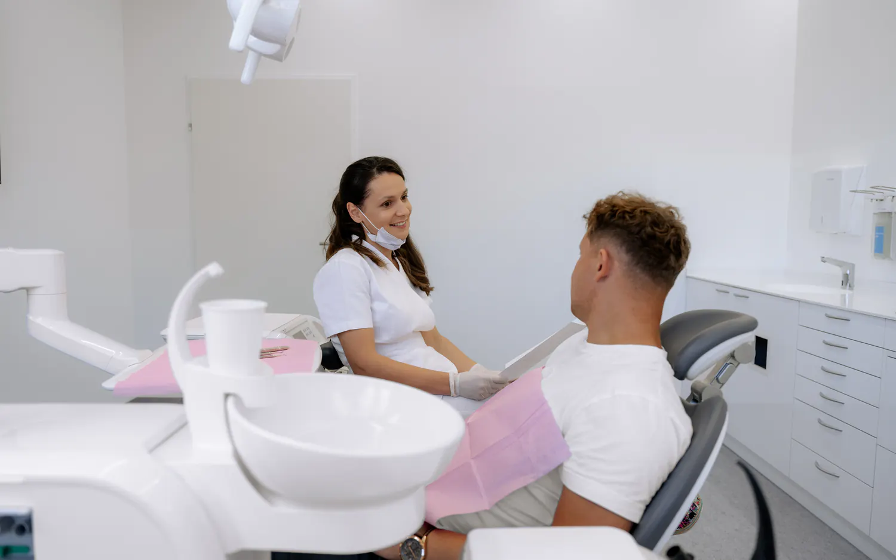

Fehlende Zähne können die Lebensqualität, das Kauen und das eigene Wohlbefinden beeinträchtigen. Zahnimplantate bieten eine moderne Möglichkeit, einzelne oder mehrere fehlende Zähne zu ersetzen.
In unserer Zahnordination Zahnaesthetika in Salzburg beraten wir Sie persönlich und entwickeln gemeinsam mit Ihnen eine individuelle Lösung, die zu Ihrer Zahnsituation und Ihren Wünschen passt.
Was ist ein Zahnimplantat?
Ein Zahnimplantat ist eine künstliche Zahnwurzel, die in den Kieferknochen eingesetzt wird. Nach einer entsprechenden Einheilphase kann darauf ein individuell angefertigter Zahnersatz befestigt werden.
Je nach Ausgangssituation können Implantate zum Ersatz eines einzelnen Zahnes, mehrerer fehlender Zähne oder zur Stabilisierung eines Zahnersatzes eingesetzt werden.
Einzelner Zahn
Ersatz eines einzelnen fehlenden Zahnes.
Mehrere Zähne
Ersatz mehrerer fehlender Zähne.
Stabiler Halt
Stabilisierung eines Zahnersatzes.
Vorteile von Zahnimplantaten
Zahnimplantate können eine langfristige und ästhetisch ansprechende Lösung für fehlende Zähne darstellen. Mögliche Vorteile sind:
- Natürlicheres Aussehen
- Stabiler Zahnersatz
- Angenehmes Kaugefühl
- Erhalt der Funktion des Kauapparates
- Kein Beschleifen benachbarter gesunder Zähne bei einem Einzelimplantat, sofern die individuelle Situation dies ermöglicht
Ob ein Implantat für Sie geeignet ist, hängt unter anderem von Ihrer allgemeinen Mundgesundheit, dem Zustand des Kieferknochens und weiteren individuellen Faktoren ab.
Zahnimplantate – persönliche Beratung in Salzburg
Jede Behandlung beginnt mit einer ausführlichen Untersuchung und persönlichen Beratung.
Dabei besprechen wir Ihre Wünsche und klären, welche Möglichkeiten für Ihre individuelle Zahnsituation infrage kommen. Wenn notwendig, werden weitere diagnostische Untersuchungen durchgeführt, um die Behandlung sorgfältig zu planen.
Unser Ziel ist eine Behandlung, die medizinische Aspekte, Funktion und Ästhetik miteinander verbindet.

Sie interessieren sich für Zahnimplantate?
Sie möchten einen fehlenden Zahn ersetzen oder sich über moderne Möglichkeiten des Zahnersatzes informieren? Wir nehmen uns Zeit für Ihre Fragen und beraten Sie gerne persönlich in unserer Zahnarztordination in Salzburg.
Häufige Fragen zu Zahnimplantaten
Wie lange hält ein Zahnimplantat?
Die Lebensdauer eines Implantats hängt von verschiedenen Faktoren ab, unter anderem von der individuellen Mundsituation, der Mundhygiene, regelmäßigen Kontrollen und der Pflege. Eine pauschale Haltbarkeit kann daher nicht garantiert werden.
Ist jeder Patient für ein Implantat geeignet?
Nicht jede Ausgangssituation ist gleich. Ob eine Implantatversorgung möglich und sinnvoll ist, wird nach einer individuellen Untersuchung und Beratung beurteilt.
Ist eine Implantatbehandlung schmerzhaft?
Die Behandlung erfolgt unter örtlicher Betäubung. Wie bei jedem chirurgischen Eingriff können danach vorübergehend Beschwerden oder Schwellungen auftreten. Über den zu erwartenden Ablauf und die Nachsorge informieren wir Sie ausführlich.
Wie läuft eine Implantatbehandlung ab?
Der genaue Ablauf hängt von der individuellen Situation ab. In der Regel stehen am Anfang eine Untersuchung und Beratung, anschließend die Planung der Implantation und die weitere Versorgung mit dem individuell angefertigten Zahnersatz.
Was kostet ein Zahnimplantat in Salzburg?
Die Kosten können je nach Anzahl der Implantate, Ausgangssituation, notwendiger Vorbehandlung und Art des Zahnersatzes unterschiedlich sein. Nach der Untersuchung können wir Ihnen die für Ihre Situation möglichen Behandlungsschritte und die voraussichtlichen Kosten erläutern.